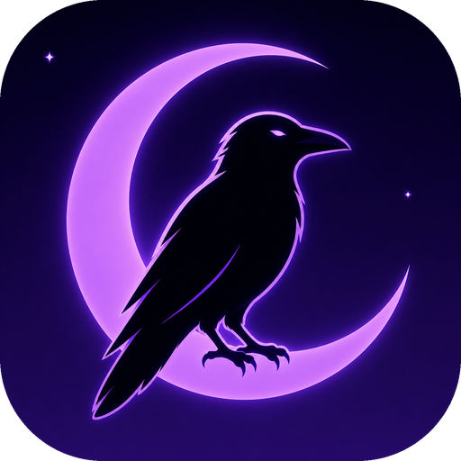

Night Crow For SafariDark theme for every website
Night Crow For Safari brings a fast, customizable dark mode to every website you visit. Per-site rules, scheduling, and iCloud sync. macOS & iOS.
Features
- Filter mode — instant CSS-based inversion with re-inverted media
- Filter+ — SVG color-matrix variant for better photo fidelity
- Static mode — pick your own background, text, and link colors
- Dynamic mode (coming in v2) — per-element CSS analysis and inversion
- Per-site rules — enable, disable, or tune any setting on individual sites
- Scheduler — match your system appearance, follow a time window, or use sunrise/sunset
- iCloud sync — settings follow you across Safari devices
- Made for Safari — native popup, native onboarding, native feedback loop
Get it
Support
Found a bug or want a feature? Open an issue on GitHub.